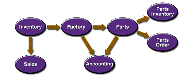

Overview
This overview of the JMS API answers the following questions.
What Is Messaging?
Messaging is a method of communication between software components or applications. A messaging system is a peer-to-peer facility: A messaging client can send messages to, and receive messages from, any other client. Each client connects to a messaging agent that provides facilities for creating, sending, receiving, and reading messages.
Messaging enables distributed communication that is loosely coupled. A component sends a message to a destination, and the recipient can retrieve the message from the destination. However, the sender and the receiver do not have to be available at the same time in order to communicate. In fact, the sender does not need to know anything about the receiver; nor does the receiver need to know anything about the sender. The sender and the receiver need to know only which message format and which destination to use. In this respect, messaging differs from tightly coupled technologies, such as Remote Method Invocation (RMI), which require an application to know a remote application's methods.
Messaging also differs from electronic mail (email), which is a method of communication between people or between software applications and people. Messaging is used for communication between software applications or software components.
What Is the JMS API?
The Java Message Service is a Java API that allows applications to create, send, receive, and read messages. Designed by Sun and several partner companies, the JMS API defines a common set of interfaces and associated semantics that allow programs written in the Java programming language to communicate with other messaging implementations.
The JMS API minimizes the set of concepts a programmer must learn in order to use messaging products but provides enough features to support sophisticated messaging applications. It also strives to maximize the portability of JMS applications across JMS providers in the same messaging domain.
The JMS API enables communication that is not only loosely coupled but also
- Asynchronous: A JMS provider can deliver messages to a client as they arrive; a client does not have to request messages in order to receive them.
- Reliable: The JMS API can ensure that a message is delivered once and only once. Lower levels of reliability are available for applications that can afford to miss messages or to receive duplicate messages.
The JMS specification was first published in August 1998. The latest version is Version 1.1, which was released in April 2002. You can download a copy of the specification from the JMS web site:
http://java.sun.com/products/jms/.When Can You Use the JMS API?
An enterprise application provider is likely to choose a messaging API over a tightly coupled API, such as remote procedure call (RPC), under the following circumstances.
- The provider wants the components not to depend on information about other components' interfaces, so that components can be easily replaced.
- The provider wants the application to run whether or not all components are up and running simultaneously.
- The application business model allows a component to send information to another and to continue to operate without receiving an immediate response.
For example, components of an enterprise application for an automobile manufacturer can use the JMS API in situations like these:
- The inventory component can send a message to the factory component when the inventory level for a product goes below a certain level so that the factory can make more cars.
- The factory component can send a message to the parts components so that the factory can assemble the parts it needs.
- The parts components in turn can send messages to their own inventory and order components to update their inventories and to order new parts from suppliers.
- Both the factory and the parts components can send messages to the accounting component to update their budget numbers.
- The business can publish updated catalog items to its sales force.
Using messaging for these tasks allows the various components to interact with one another efficiently, without tying up network or other resources. Figure 33-1 illustrates how this simple example might work.

Figure 33-1 Messaging in an Enterprise Application
Manufacturing is only one example of how an enterprise can use the JMS API. Retail applications, financial services applications, health services applications, and many others can make use of messaging.
How Does the JMS API Work with the J2EE Platform?
When the JMS API was introduced in 1998, its most important purpose was to allow Java applications to access existing messaging-oriented middleware (MOM) systems, such as MQSeries from IBM. Since that time, many vendors have adopted and implemented the JMS API, so a JMS product can now provide a complete messaging capability for an enterprise.
Since the 1.3 release of the J2EE platform, the JMS API has been an integral part of the platform, and application developers can use messaging with J2EE components.
The JMS API in the J2EE platform has the following features.
- Application clients, Enterprise JavaBeans (EJB) components, and web components can send or synchronously receive a JMS message. Application clients can in addition receive JMS messages asynchronously. (Applets, however, are not required to support the JMS API.)
- Message-driven beans, which are a kind of enterprise bean, enable the asynchronous consumption of messages. A JMS provider can optionally implement concurrent processing of messages by message-driven beans.
- Message send and receive operations can participate in distributed transactions, which allow JMS operations and database accesses to take place within a single transaction.
The JMS API enhances the J2EE platform by simplifying enterprise development, allowing loosely coupled, reliable, asynchronous interactions among J2EE components and legacy systems capable of messaging. A developer can easily add new behavior to a J2EE application that has existing business events by adding a new message-driven bean to operate on specific business events. The J2EE platform, moreover, enhances the JMS API by providing support for distributed transactions and allowing for the concurrent consumption of messages. For more information, see the Enterprise JavaBeans specification, v2.1.
At the 1.4 release of the J2EE platform, the JMS provider can be integrated with the application server using the J2EE Connector architecture. You access the JMS provider through a resource adapter. This capability allows vendors to create JMS providers that can be plugged in to multiple application servers, and it allows application servers to support multiple JMS providers. For more information, see the J2EE Connector architecture specification, v1.5.
All of the material in The J2EE(TM) 1.4 Tutorial is copyright-protected and may not be published in other works without express written permission from Sun Microsystems.